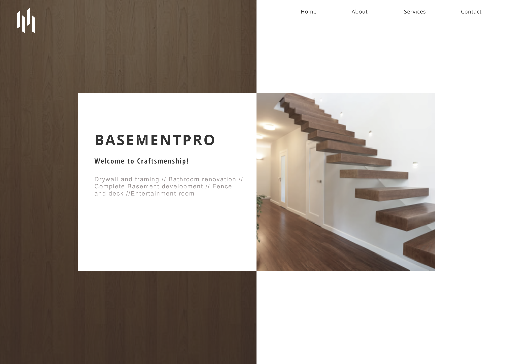

basementpro

Description
BasementPRO is a construction company and they wanted me to redesign their original website: here.Website

Design
This company does a lot of construction work such as renovations, basement development, framing, fences and deck. In order to make the website's design to align with their services, I chose to use wooden textures, different shades of brown, beige and other earthy colours.Tools
I decided to use Wordpress as it is client friendly and makes it easy for them to edit their own website.I had also been trying out different page builders as they make the process a lot faster and easier. Oxygen Builder has quickly become my favourite site builder as it is clean, fast and made for developers. It allows me to embed in code and significantly reduces the time to build.